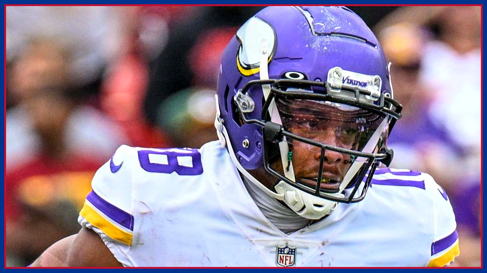

Justin Jefferson torched Buffalo for 193 yards in 2022. Monday, he gets his rematch.
Buffalo has faced Justin Jefferson exactly once — in November 2022, when he caught 10 for 193 yards and made the fourth-and-18 catch Bills fans still see in their sleep, per the Democrat and Chronicle. Monday night he gets his rematch: frustrated, underused at 28 catches for 335 yards, and lined up against Christian Benford.

There is a catch Buffalo fans can still see with their eyes closed. Fourth-and-18. Two minutes left. Minnesota trailing 27-23 at the old Highmark Stadium in November 2022, the game basically over — until Kirk Cousins threw a prayer toward the sideline and Justin Jefferson went up over Cam Lewis, got one hand on a ball Lewis had two hands on, wrestled it away as they fell, and kept it off the turf for 32 yards. Per the Democrat and Chronicle's rematch look published Thursday, that was arguably the catch of that NFL season, maybe the best catch of Jefferson's career. On Monday night at U.S. Bank Stadium — 6-1 Buffalo at 6-1 Minnesota, 8:15 PM ET — Jefferson gets his second-ever game against the Bills. The first one still haunts this fan base. That is not a metaphor. It is the preview.
Run the whole 2022 afternoon back, because Monday only means what it means against that memory. Jefferson was targeted 16 times by Cousins that day and caught 10 for 193 yards and a touchdown, per the Democrat and Chronicle — in the season he finished as the NFL's Offensive Player of the Year. After the fourth-and-18 miracle, he appeared to catch the go-ahead touchdown, only for replay to rule him just short; Buffalo stopped Cousins on a sneak and thought it had survived. Then Josh Allen fumbled, Eric Kendricks recovered in the end zone, Tyler Bass tied it with two seconds left anyway, and Allen's overtime interception to Patrick Peterson at the Minnesota 20 ended a 33-30 Vikings win. Minnesota finished with 481 yards, Cousins threw for 357, and Dalvin Cook — James Cook's older brother — ran for 119, including the 81-yard touchdown that started the rally from 27-10 down. Buffalo has faced the two-time All-Pro Jefferson exactly once, per the Democrat and Chronicle. Once was plenty.
So here is the twist nobody in Buffalo saw coming four years ago: the Jefferson walking into this rematch is not destroying anybody right now — and he knows it. For the season, per the Democrat and Chronicle, Jefferson has 28 catches on 40 targets for 335 yards and four touchdowns, with no eruption to point to, on a Minnesota offense that ranks 27th in scoring at 20.0 points per game, 29th in yards at 279.4 and 31st in passing yards at 165.6. Last Sunday in Detroit was supposed to be the get-right game against a struggling defense. Instead the Lions held Minnesota to 15 points and 266 yards in the Vikings' first loss, Jefferson caught five passes for 33 yards — one of them, to be fair, a tremendous one-handed touchdown — and afterward, per the same reporting, the normally affable Jefferson blew off reporters in the locker room. Athlon's Week 9 breakdown counted four inaccurate overthrows on his nine targets in that game. The best receiver in football is open, frustrated, and watching his quarterback miss him.
His quarterback is not hiding from it. “Obviously he's frustrated, and that's understandable,” Kyler Murray said, per the Democrat and Chronicle. “He is who he is, and he has every right to the way he feels when he doesn't get the ball. That's on us to find a way to get him the ball.” Head coach Kevin O'Connell, asked Monday whether Jefferson's irritation is showing, called him “the ultra-competitor” who sets the standard, and pointed to the double-team attention Jefferson draws on known passing downs — attention that, in O'Connell's telling, means somebody else has to make a play. The numbers underneath are colder: per the Democrat and Chronicle, Murray's passing success rate sits at 38.5%, 26th among starters, against Allen's 50%, sixth. And Minnesota is monitoring Murray's hamstring this week, per the Bills' own Week 9 storylines — Bills.com noted the soreness cropped up in the fourth quarter against Detroit and that Murray needed treatment Monday. That is a storyline to track into Saturday's game-status report for a Monday game, not a designation to assume in either direction.
Which is exactly what makes Monday dangerous in the specific way Bills fans recognize in their stomachs. A superstar's slump does not lower his ceiling; it loads it. Buffalo's side of the matchup has a name, too: per Bills on SI's Week 9 look at the Bills with the most to prove, published Thursday via Yardbarker, Christian Benford will find himself lined up across from Jefferson for much of the game — the matchup that site called one of the best to watch all weekend, against a route-running wizard who is unguardable when he is on top of his game and who can light up a scoreboard without warning. Benford was a rookie in that 2022 game. He is Buffalo's top corner now. There is no hiding him from this assignment, and, honestly, there should not be: this is the rematch inside the rematch.
Defensive coordinator Jim Leonhard, at least publicly, is refusing to buy the slump. “We play a team that's 6-1,” Leonhard said, per the Democrat and Chronicle. “What doesn't necessarily matter — offensively, defensively — is how they're getting it done and they know how to win, right? And that's the trick of the NFL is do you know how to win. We're gonna go to Minnesota and play a team that knows how to do that right now.” That respect is earned context, not coach-speak filler: Leonhard's defense just played its best game of the season against Baltimore, all of it — as this site's Film Room laid out Tuesday — carrying the asterisk of Lamar Jackson's first-snap thumb injury and a third-string rookie finishing the game. Jefferson, even a starving Jefferson, attached to a starting quarterback, is a different kind of test than a backup's backup. If Buffalo's suddenly aggressive booth-called defense holds Jefferson to another 33-yard night, the asterisk conversation ends. If Jefferson finally erupts, it will not be a surprise to anyone who remembers 2022. It will feel like a sequel.
That is why, in a week this site has already spent on the No. 1 offense meeting the No. 1 defense, the Culture Desk keeps coming back to one man in a purple helmet. Games like Monday's get remembered for a single play — Buffalo fans of all people know that; we have been remembering one for four years, against our will, in high definition. Jefferson does not need 193 yards to change Monday night. He needs one fourth-quarter moment where the ball is in the air, a Bills defender is in perfect position, and the whole stadium understands at the same time that perfect position was not enough the last time. Benford and Leonhard's defense get to write the ending this time. Make Jefferson's quiet season stay quiet for one more week, and Buffalo leaves Minneapolis 7-1 with the ghost finally buried. Let him wake up, and Bills Mafia will have a second catch to see in its sleep. Go Bills — and get the full Monday night fallout in your inbox every morning with The BNC Blitz.
The BNC Blitz is free: the day's Bills news, one stat that matters, and one take, every morning. Join to keep reading — and never miss the end of a story again.